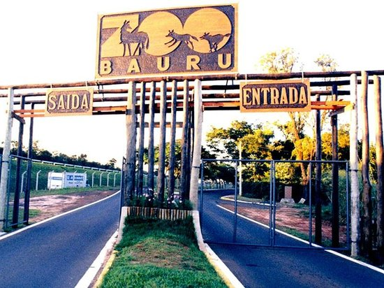
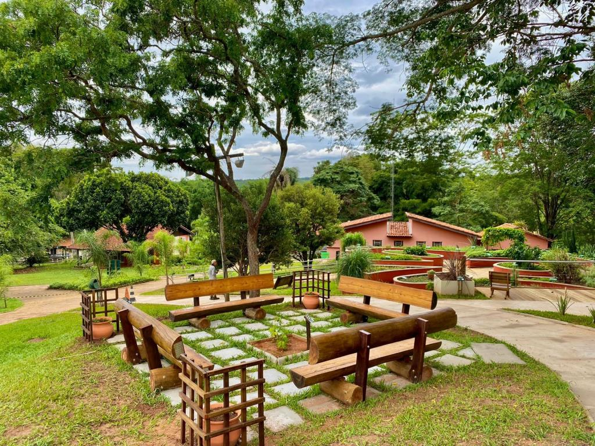
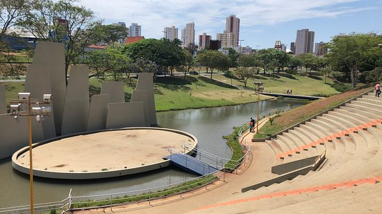
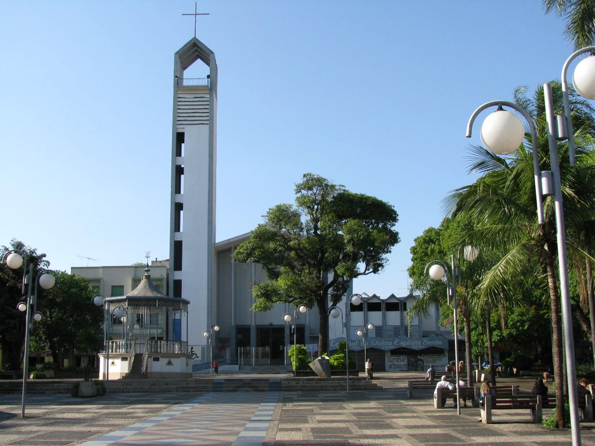
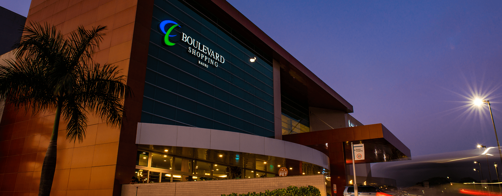
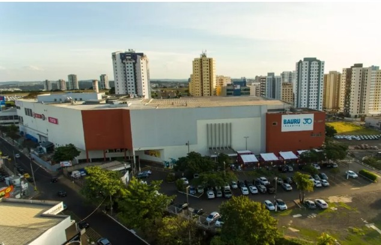
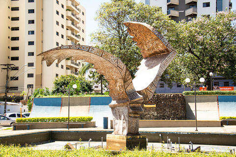
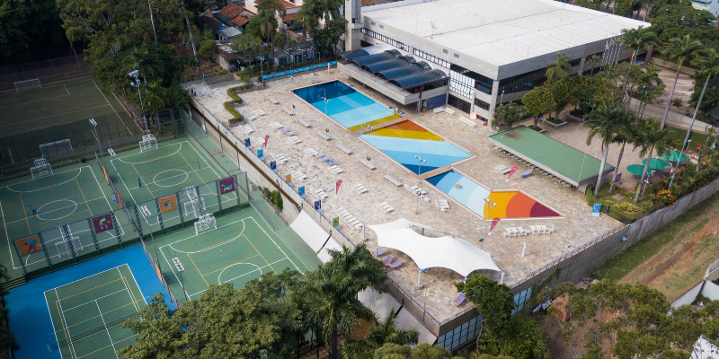

Pontos Turisticos de Bauru
Bauru, localizada no interior paulista, é uma cidade que combina história, natureza e cultura, oferecendo aos visitantes uma variedade de atrações turísticas. Se você está planejando conhecer a cidade, confira alguns dos principais pontos turísticos que Bauru tem a oferecer.
Natureza e Lazer
Parque Zoológico Municipal de Bauru
Com mais de 700 animais de 170 espécies diferentes, o Zoológico de Bauru é um dos maiores do Brasil. Além de proporcionar lazer, o parque desempenha um papel importante na conservação e educação ambiental. A entrada custa R$5,00 para adultos e crianças a partir de 5 anos, com descontos para idosos e entrada gratuita para crianças menores de 5 anos.

Jardim Botânico Municipal de Bauru
Ao lado do zoológico, o Jardim Botânico ocupa uma área de 321 hectares e é uma das maiores reservas de vegetação nativa do Cerrado Paulista. O local oferece trilhas ecológicas, um mirante com vista panorâmica e coleções de plantas como orquídeas, bromélias e samambaias. A entrada é gratuita e o espaço é ideal para caminhadas e atividades ao ar livre.

Parque Vitória Régia
Situado em uma das principais avenidas da cidade, o Parque Vitória Régia é um dos cartões postais de Bauru. Com áreas para caminhadas, espaços para eventos e uma grande fonte central, o parque é perfeito para momentos de lazer e relaxamento.

Cultura e História
Museu Ferroviário Regional de Bauru
Instalado na antiga estação ferroviária, o museu oferece uma viagem no tempo, com exposições de fotografias, documentos, peças originais e maquetes que retratam a importância das ferrovias para o desenvolvimento da região. A entrada é gratuita, e visitas guiadas podem ser agendadas.

Catedral do Divino Espírito Santo
Localizada na Praça Rui Barbosa, a Catedral do Divino Espírito Santo é uma das igrejas mais antigas de Bauru. Com arquitetura imponente e rica em detalhes, a catedral é um importante patrimônio histórico e cultural da cidade.

Compras e Entretenimento
Boulevard Shopping
Um dos principais centros comerciais da cidade, o Boulevard Shopping oferece uma variedade de lojas, praça de alimentação, cinema e opções de entretenimento para toda a família.

Outro importante shopping da cidade, o Bauru Shopping conta com diversas lojas, restaurantes e opções de lazer, sendo uma excelente opção para compras e diversão.

Outros Pontos de Interesse
Praça da Paz
Localizada no centro da cidade, a Praça da Paz é um espaço agradável para caminhadas e lazer, com áreas verdes e bancos para descanso.

SESC Bauru
O SESC oferece uma variedade de atividades culturais, esportivas e de lazer, incluindo exposições, apresentações musicais e oficinas. É um excelente local para quem busca cultura e entretenimento.
